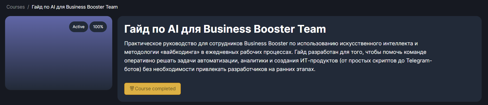

AI есть, системы нет
Сотрудники пробуют разные инструменты, но процессы компании остаются прежними: данные собираются вручную, решения не закрепляются, эффект не считается.
AI Booster за 10 недель через обучение и практику помогает вашей команде переводить ручные задачи и эксперименты в рабочие решения, которые экономят время, деньги и дают измеримый результат.
«Те инструменты, которые уже есть, они какие-то неполноценные. Хочется выстроить систему!»
«Хочу внедрить AI, но не понимаю как»
«Не могу заставить сотрудников автоматизировать процессы. Протест.»
«Мне нужно понять финал, что будет в конце внедрения AI и автоматизации»
Сотрудники пробуют разные инструменты, но процессы компании остаются прежними: данные собираются вручную, решения не закрепляются, эффект не считается.
Без практики на своих задачах AI быстро превращается в разовый интерес. Люди снова открывают таблицы, CRM, переписки и делают все руками.
Непонятно, кто должен внедрять, какие процессы брать первыми и что будет результатом: обучение, бот, отчет, автоматизация или измеримая экономия.
Мы не начали с идеальной системы. Сначала внутри компании были те же ручные процессы, которые сейчас тормозят внедрение AI в командах владельцев.
Ручной и выборочный контроль 30+ продавцов: руководителю нужно было собирать картину из CRM, звонков, переписок и отчетов.
Ручная подготовка креативов и гипотез: маркетинг терял скорость, пока команда собирала, адаптировала и проверяла материалы.
IT-специалисты ждали ТЗ, а сотрудники, которые лучше всех знали реальную работу, не могли сами переводить процессы в решения.
Business Booster построил внутреннюю AI-экспертизу, запустил регулярное обучение и практические сессии. Сотрудники приходили со своими ручными процессами и вместе с экспертами превращали их в рабочие решения.

Мы взяли реальные процессы компании: продажи, маркетинг, отчеты, контроль качества и управленческую аналитику.
AI-аватары помогли вывести образовательный продукт на рынок Тайваня без тяжелого цикла съемок, монтажа и локального производства роликов. Команда быстрее запустила новое направление и получила отдельный источник выручки.
НейроРОП Марины помогает руководителю видеть, какие сделки требуют внимания, как обрабатываются заявки и где команда отклоняется от технологии продаж. Управление идет не по ощущениям продавцов, а по данным из CRM, звонков и переписок.
За два месяца сотрудники Business Booster собрали 70 автоматизаций. Каждый кейс фиксировался: что человек делал раньше, что автоматизировал, сколько времени занимал процесс до и после. В сумме это дало больше 4 000 часов и больше $30 000 годовой экономии.
Маркетинг Business Booster автоматизировал сбор успешных креативов, адаптацию идей под продукт и отбор гипотез для тестов. Команда стала быстрее проверять креативы и подняла окупаемость маркетинга.
AI Booster — это 10-недельный запуск AI-трансформации через обучение и практику вашей команды на реальных задачах компании.
Выбираем процессы, где ручная работа сильнее всего забирает время, деньги и управленческое внимание.
Обучаем команду применять AI к своим рабочим задачам и зонам ответственности.
Доводим решения до использования в работе и фиксируем эффект: часы, деньги, скорость, качество контроля.
Определили, какие процессы компании стоит автоматизировать первыми и кого из команды подключить к запуску.
Команда сразу попробовала AI на практике и собрала первое рабочее решение, которое применила в работе.
Команда научилась работать с корпоративной информацией, базами, почтой и сервисами компании.
На практических сессиях вместе с экспертами команда собрала решения под выбранные процессы компании.
Зафиксировали, что уже работает, какой эффект получен и какие процессы запускать следующими.
Внедрение AI-автоматизации не должно держаться только на мотивации владельцев. Внутри программы есть игровая механика, которая помогает сотрудникам учиться и делиться результатами.
Сотрудники приходят со своими задачами и видят, что AI снимает реальную рутину, а не добавляет еще одну обязанность.
Команда выкладывает автоматизации, показывает “что было” и “что стало”, а сильные решения становятся примером для остальных.
На выходе остается не просто список обученных людей, а команда, которая умеет находить процессы для автоматизации дальше.
Калькулятор показывает, во что ручная работа команды превращается в деньгах и какой эффект может дать AI-внедрение.
Нет. Программа построена так, чтобы обычные сотрудники могли находить ручные процессы, собирать первые решения и развивать их с поддержкой экспертов.
У вас будут рабочие решения на реальных процессах компании, понятный список следующих автоматизаций и измеримый эффект в часах, деньгах или скорости работы.
Мы начинаем не с давления, а с практики на их собственных задачах. Когда сотрудник видит, что AI снимает его ручную работу, сопротивление снижается, а включенность растет.
Команда приходит с выбранной задачей компании и вместе с экспертами собирает рабочее решение. Это не лекция и не домашнее задание, а практическая сессия с конкретным результатом.
На программе разбираем безопасные сценарии работы с AI, доступами, корпоративными сервисами и внутренними данными. Не все процессы нужно отдавать модели: часть решений строится вокруг разграничения доступа и правил компании.
Основной ритм — одно онлайн-мероприятие в неделю. Воркшопы длятся около 2 часов, хакатоны — около 3 часов, потому что там команда работает над конкретными решениями.
Новые модели выходят быстрее, чем команда привыкает к старым. AI-тренды нужно отслеживать постоянно: выбирать задачи, запускать решения, считать эффект и обновлять внедрения по мере появления новых возможностей. Это мы берем на себя.
Диагностика помогает определить, какие процессы стоит автоматизировать первыми и с чего начать обучение.